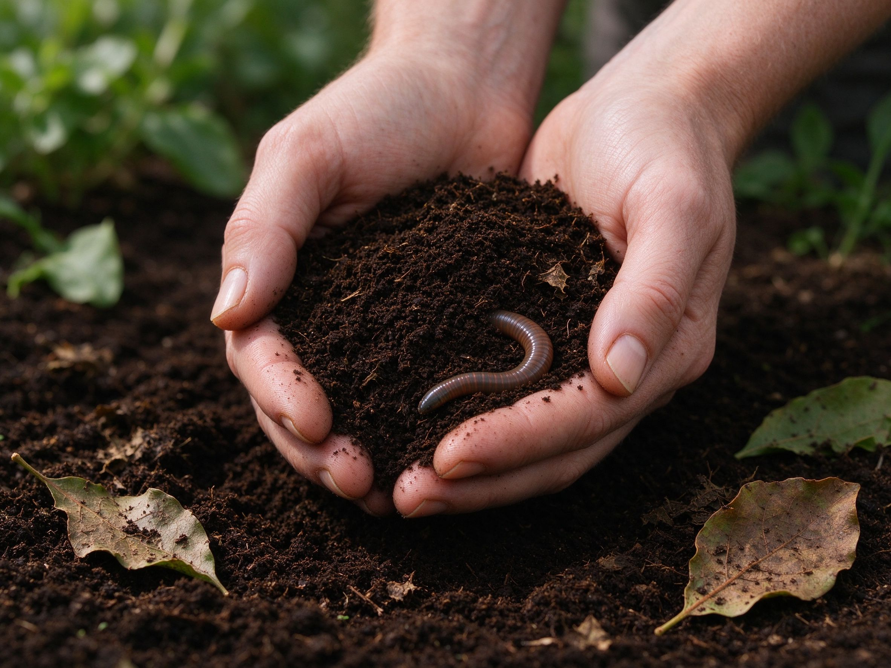

How to Improve Vegetable Garden Soil
Great gardens start with great soil. Improving your soil is the single highest-return task in gardening — healthier plants, bigger harvests, and fewer problems.
Test Your Soil
A simple soil test tells you your pH and nutrient levels. Most vegetables prefer a pH around 6.0-7.0. Home test kits are cheap and easy to use.
Add Organic Matter
Compost, aged manure, and leaf mold are the best soil improvers. They lighten heavy clay, help sandy soil hold moisture, and feed soil life. Work a few inches into the top of beds each season.
Improve Drainage
Heavy clay drains poorly and waterlogs roots. Fix it by adding compost and coarse material, building raised beds, or planting in mounds. Never work soil when it's soaking wet.
Feed the Soil Food Web
Healthy soil teems with microbes and worms that break down matter into plant food. Minimize tilling, keep soil covered with mulch, and let roots and organic matter do the work.
Mulch and Protect
A layer of mulch protects soil from sun, wind, and compaction, and feeds it as it breaks down. Keep beds covered year-round with mulch or cover crops.
Rotate Crops
Rotating where you plant crops each year prevents nutrient depletion and breaks pest and disease cycles.
Good soil makes everything easier — combine it with our correct watering guide and easy vegetables list.